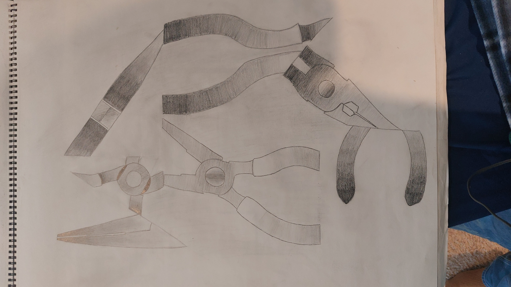

Egg Shading
Taking the practice of the sphere shading, next, we have various angles of egg displayed on a table, meaning the appropriate shading is needed.
Vase Practice
This piece was made by looking at a blurry image displayed via a projector. The original image was extremely blurry and progressed towards a much clearer image, but done in a PowerPoint presentation style, with around 10-15 images, each clearer than the last. The purpose of this practice was to defocus from the details of the image, and only focus on the smudges. Sometimes when creating art, we may tend to focus technology much on the finer details, so this practice helps stray away from that way of thinking.
Sphere Shading
Proper shading can be quite an important part of artmaking, so practicing proper shading on a sphere is good practice. Within this piece, only 6 different shades were allowed.
Egg Shading
Taking the practice of the sphere shading, next, we have various angles of egg displayed on a table, meaning the appropriate shading is needed.

Abstract Plyers
The purpose of this piece was to take an object and sketch it out from different angles, as well as add gradients in order to help make the piece pop.
Pattern Penguin
Being one of my favorite animals, this penguin contains different texture looks along the entirety of its body. This was achieved by taking paper and placing it on top of a textured surface, such as a bumpy wall or concrete floor, using various means to obtain the texture on the paper, such as lightly pressing with graphite pencils or thin charcoal. Cutting and gluing these different textures helps bring the piece together.
Hallway Perspective
In order to practice the perspective, one of the assignments was to sketch an image of a picture of something in single-point perspective, this one being of a hallway found in San Jose State University's Duncan Hall. Perspective is an important part of artmaking, as to make sure the illusion of three-dimensionality is properly conveyed.
Curved Bottle
Similarly to the Hallway Perspective piece, this piece consists of a bottle and cup-like object, with the intention of giving the illusion of curvature.
Cardstock Sculpture Straight
Cardstock Sculpture Curved
The cardstock mini sculptures were created with the idea that there are to be as few flat areas holding up the sculpture as possible, as well as only using two pieces total. The straight version can stand quite well on its own, as can the curved version. The curved version can also be aligned to stand in other orientations.
Wired Sculpture
Multiple sequences of line work seem to help give off the illusion of three-dimensionality in drawings, so who's to say the same cannot be done in a sculpture? Being made of various shapes of wiring, we are greeted with a nice three-dimensional piece of a bean-like being that some may recognize. The piece was to be a replication of an already existing object, such as a water bottle or plushie.
Welded Motion
The task given here was to create a piece that implied motion, despite being a completely still piece. The second task was that it was to be welded together. My concept here was to use the idea of repeated patterns in order to imply motion. The color choice of blue with speckled black and white paint was to make it stand out and pop more, as well as look good for the eyes.

Blueberry Logo
Originally carved from wax, made into a mold, and poured with metal, we have a blueberry logo. My idea here was to create a logo for a farmers' stand or some sort of farm-like store. One of my ideas that I quite liked was blueberries with splashing water. If done in actuality, the sign would be a massive metal sign, fit with color and perhaps the name of said farmers stand.
Seasons
A simple but nice piece to bring out what each person though about each season, and to paint it within a confined square. My personal favorite to create was the winter, as pine trees can be painted in a simple but effective way.
Colored Curves
For this piece, we were to replicate an image consisting of three-dimensional objects within the image using only two colors, one in black and white, and one in black and a primary color, mine being yellow. The gradient bar along the bottom was to better get an understanding on going from one color to the next in a smooth fashion. However, this could only be done within 11 squares, one of which was always to be completely black.
Cardstock Sculpture Straight
These two pieces, using wood and tools, were made for somewhat practical uses. It is important to consider that while art can oftentimes be a treat to the eyes, there is art and beauty in practicality. Both pieces make use of various woodshop tools, such as table saws, carving tools, and sanders in order to make sure it is as good as can be, as well as durable.
Cardstock Sculpture Curved